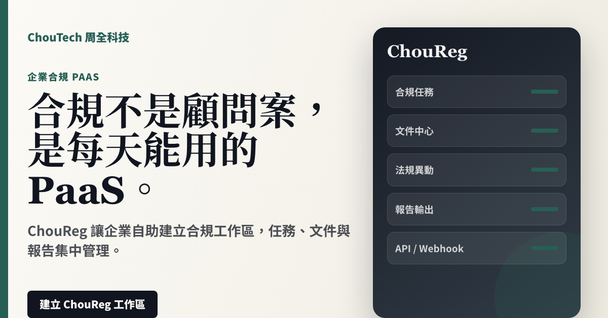
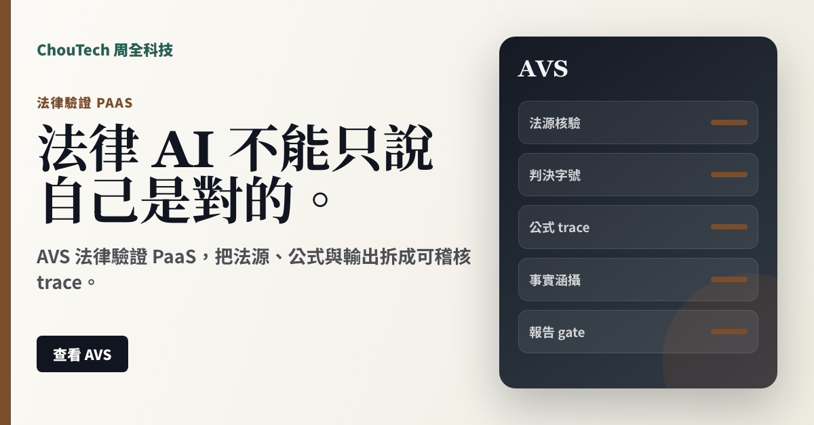
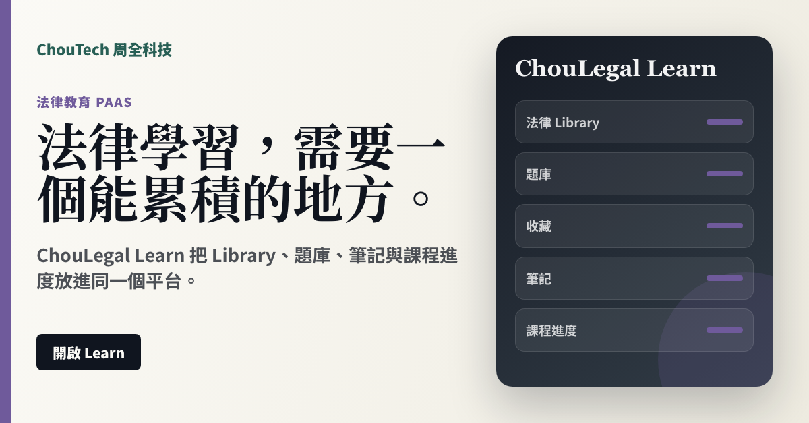

法律權益入口
把勞動、消費、租屋、財產與公務員權益，整理成可理解的下一步。
正式入口可展示
看產品頁
Product Lines
語言統一改成 PaaS：開通、訂閱、建立工作區、平台合作。主軸是產品自助使用，不是顧問專案。
把勞動、消費、租屋、財產與公務員權益，整理成可理解的下一步。
不是把人丟給律師，而是先把事件類型、資料、需求與地區整理清楚。
案件、期限、卷證、關係人、時數與帳務，集中在一個律師工作區。
把合規任務、文件、法規異動、事件與報告放進同一個 PaaS 工作區。
班表產生、人力成本、最低營業額、尖離峰配置與勞基法風險提示。
法源、判決、公式、事實涵攝與實務區間，不能只靠模型說自己對。
把法律知識、題庫、筆記、收藏與課程進度放進同一個學習帳號。
Ad Assets
每張 1200x628 PNG，適合放社群、簡報、訊息推銷與網站 OG 圖。
ChouLegal 權益查詢 PaaS，讓民眾先理解路徑，再銜接律師。

先整理事件包，再做專長、地區與服務型態媒合。

ChouCounsel 案件工作台 PaaS，把期限、卷證與帳務集中。

ChouReg 讓企業自助建立合規工作區，任務、文件與報告集中管理。

ChouRoster 合規排班 PaaS，同時看成本、尖離峰與工時風險。

AVS 法律驗證 PaaS，把法源、公式與輸出拆成可稽核 trace。

ChouLegal Learn 把 Library、題庫、筆記與課程進度放進同一個平台。
